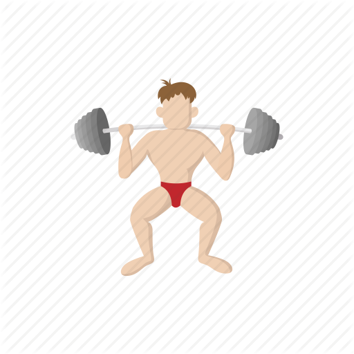
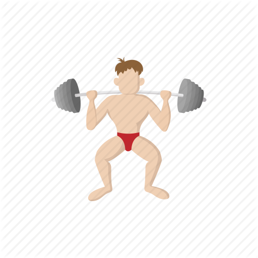

Tips
Head into the postgrade area located in the corner of the stables courtyard. They have free tea and coffee, and there's lots of welcomeing and nice people there to help you out!
In university of limerick they run a programme for the first 7 weeks where you can head into their hub thats just in the stables, its very easy to find it but lots of people dont realise it there. They will give you loads of free things such as refil pads, pens, coffee cups, water bottles, usb sticks and more! This is an invaluable asset for a new student and is a great way to save money on stationary, they also host weekly events such a a pizza, movie in the odeon, and transport for just 10 euro! It is also a great way to meet new people.
There are some great spots in the library believe it or not, a common spot that our researchers at UL Survival Guide have found is taking the elevator to floor 3 and in the hallway as soon as you get out there is comfy chairs and a nice area to chat and relax.
Note:
In the beginning of the first semester there is a clubs and societies recruitment drive where you can view all ul has to offer, you can also talk to the clubs organisers directly and sign up
on the spot, however i recommend not signing up at the drive but when you show up to their events/trainings. Clubs and societies are probably one of the most important things to get involved
in and a great way to get out of your comfort zones and to meet new people and make friends.
Time Management
- Time management is hugely important, and a lot of your first semester/year will be trying to strike a balance between fun,work,exercise,social life and food. You need to strike a balance between all of these to live a healthy and happy lifestyle while performing optimally, too much of one thing and it will have a negative impact.
- If your like many and have a distance to travel, often times cycling is the best way to do it. However you have to be careful where you leave your bike, luckely UL has a great facility called "the bike hub", all you have to do is send an email to register and bingo your in. Your card will now open the bike hub which is a shelter full of bike racks and even has security cameras inside, this keeps your bike safe and dry. And is the only safe spot to keep it if you forget you lock.
- If you are a gym goer, but you weren't lucky enough to get student accommodation. A gym membership can be expensive and a big commitment when you are only figureing things out for the first time, a one time gym enter is €5.20 which is quite pricy for a student, but with our one of our tricks you can get into the gym for only €3.50 if you tell them you are going for a swim! This is a great trick and works every time!
 
